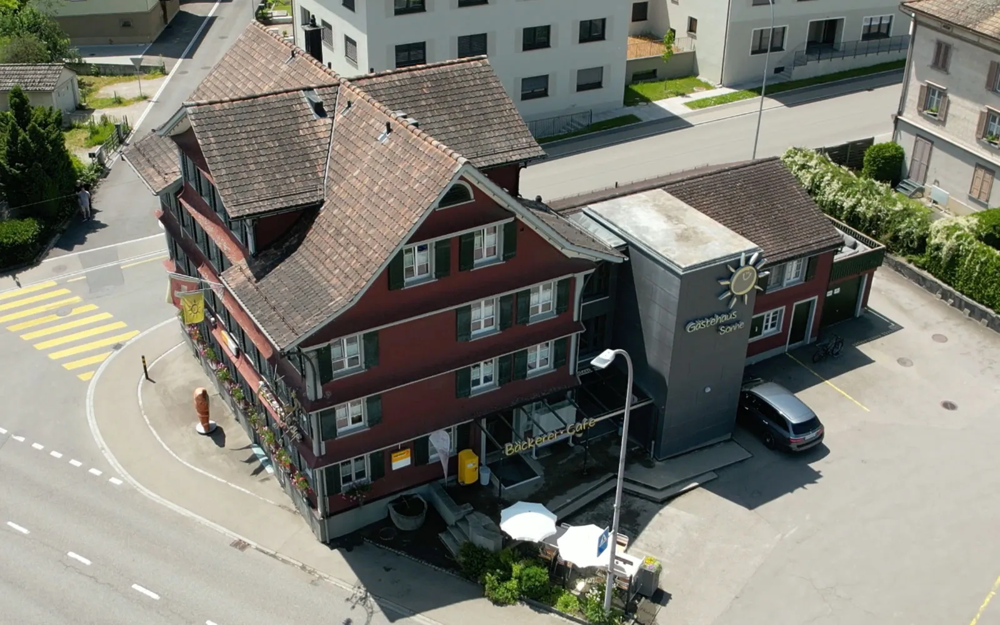

Degersheim
Gasthaus Sternen
Restaurant, Hühnerstall Bar, sieben Gästezimmer — seit 1903 am selben Platz.
Entwurf ansehen →
Degersheim
Gasthaus Sternen
Restaurant, Hühnerstall Bar, sieben Gästezimmer — seit 1903 am selben Platz.
Entwurf ansehen →

Bütschwil Gästehaus Sonne 14 Zimmer ab CHF 106, Check-in rund um die Uhr, Bäckerei-Café im Haus. Entwurf ansehen →